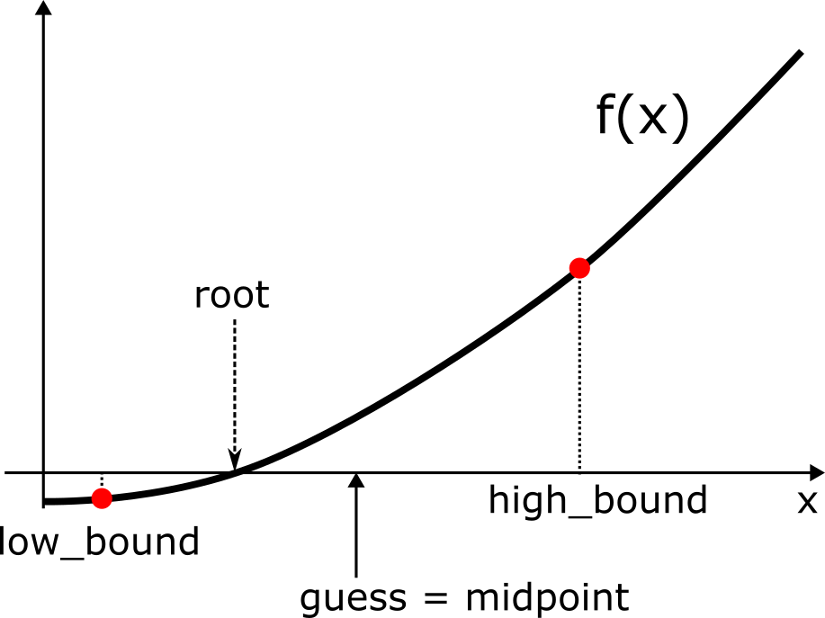

# Define helper function
from pytest import approx
def error_message(actual, expected):
return f'Actual {actual} != Expected {expected}'
Session 2 - Flow control#
Now we are going to practice branching and iteration
branching (interpreter steps through from top to bottom)
if: if condition is true, run this block of codeelif: else if these conditions are true, run this block of codeelse: if none of the above are true, run this block of code
iteration
for: known number of iterations, can end early with abreakconditionwhile: unbounded number of iterations but know abreakcondition
# Let us start by iterating over strings.
string = "Programmming_in_Python_rocks"
# write a "for" loop using the "range" function that prints each character in string
for index in range(len(string)):
print(string[index])
P
r
o
g
r
a
m
m
m
i
n
g
_
i
n
_
P
y
t
h
o
n
_
r
o
c
k
s
# Let us now instead try to iterate over the characters in the string directly and print each of them
for char in string:
print(char)
P
r
o
g
r
a
m
m
m
i
n
g
_
i
n
_
P
y
t
h
o
n
_
r
o
c
k
s
# We can also use loops inside loops to print number sequences like
# 0
# 01
# ...
# 0123456
# and so on
for i in range(10):
for j in range(i+1):
print(j, end='')
print()
0
01
012
0123
01234
012345
0123456
01234567
012345678
0123456789
# Modify the example to print only the even numbers.
# The mod (%) operator may come in handy!
for i in range(0, 10, 2):
for j in range(i+1):
if j % 2 == 0:
print(j, end='')
print()
0
02
024
0246
02468
# Now we are interested in knowing the numbers of 'P' in the string,
# so you need to write code that will output (print) that using the variable p_count.
# Might be helpful to recall the comparison operator '=='
string = "Programmming_in_Python_rocks"
p_count = 0
for character in string:
if character == 'P':
p_count += 1
assert p_count == 2, error_message(p_count, 2)
# Rewrite the following while loop to a for loop
letters = "aefhilmnorsxAEFHILMNORSX"
word = input("I will cheer for you! Enter a word: ")
times = int(input("Enthusiasm level (1-10): "))
# While loop example to reproduce with for loop
i = 0
while i < len(word):
char = word[i]
if char in letters:
print("Give me an " + char + "! " + char)
else:
print("Give me a " + char + "! " + char)
i += 1
print("What does that spell?")
for i in range(times):
print(word, "!")
---------------------------------------------------------------------------
StdinNotImplementedError Traceback (most recent call last)
Cell In[8], line 4
1 # Rewrite the following while loop to a for loop
3 letters = "aefhilmnorsxAEFHILMNORSX"
----> 4 word = input("I will cheer for you! Enter a word: ")
5 times = int(input("Enthusiasm level (1-10): "))
7 # While loop example to reproduce with for loop
File ~/miniconda3/envs/bb1000/lib/python3.9/site-packages/ipykernel/kernelbase.py:1201, in Kernel.raw_input(self, prompt)
1199 if not self._allow_stdin:
1200 msg = "raw_input was called, but this frontend does not support input requests."
-> 1201 raise StdinNotImplementedError(msg)
1202 return self._input_request(
1203 str(prompt),
1204 self._parent_ident["shell"],
1205 self.get_parent("shell"),
1206 password=False,
1207 )
StdinNotImplementedError: raw_input was called, but this frontend does not support input requests.
for char in word:
if char in letters:
print("Give me an " + char + "! " + char)
else:
print("Give me a " + char + "! " + char)
print("What does that spell?")
for i in range(times):
print(word, "!")
# We can also loop over lists of numbers to find the max number!
# You will learn more about lists in lecture 4. For now, think about them as objects you can iterate over like strings (also called iterables).
numbers = [1, 4, 12, 41, 3, 8, 142, 2, 5]
max_number = 0
# Write a loop that checks every number in the list and see if it is bigger than previous max_number
for number in numbers:
if number > max_number:
max_number = number
print(max_number)
assert max_number == 142, error_message(max_number, 142)
# Computers are great at doing calculations. Write a piece of code that can print the 10 times multiplication table.
# Here you want to create the entire line of the table before invoking the print function - because print automatically adds a newline
for i in range(1, 11):
row = ''
for j in range(1, 11):
row += f'{j*i:4d} |'
if j < 11:
row += ' '
row += '\n'
print('-'*69, end='\n')
print(row, end='')
# Should look something like this
"""
---------------------------------------------------------------------
1 | 2 | 3 | 4 | 5 | 6 | 7 | 8 | 9 | 10 |
---------------------------------------------------------------------
2 | 4 | 6 | 8 | 10 | 12 | 14 | 16 | 18 | 20 |
---------------------------------------------------------------------
3 | 6 | 9 | 12 | 15 | 18 | 21 | 24 | 27 | 30 |
---------------------------------------------------------------------
4 | 8 | 12 | 16 | 20 | 24 | 28 | 32 | 36 | 40 |
---------------------------------------------------------------------
5 | 10 | 15 | 20 | 25 | 30 | 35 | 40 | 45 | 50 |
---------------------------------------------------------------------
6 | 12 | 18 | 24 | 30 | 36 | 42 | 48 | 54 | 60 |
---------------------------------------------------------------------
7 | 14 | 21 | 28 | 35 | 42 | 49 | 56 | 63 | 70 |
---------------------------------------------------------------------
8 | 16 | 24 | 32 | 40 | 48 | 56 | 64 | 72 | 80 |
---------------------------------------------------------------------
9 | 18 | 27 | 36 | 45 | 54 | 63 | 72 | 81 | 90 |
---------------------------------------------------------------------
10 | 20 | 30 | 40 | 50 | 60 | 70 | 80 | 90 | 100 |
"""
# This time I would like that you insert a "super" between "to" and "hero" in our motto string to create a super_string
# Later on you will learn smarter ways of doing this, but for now let us practice branching and loops.
string = 'From zero to hero'
super_string = ""
not_yet_injected = True
for i in range(len(string)):
if i > 0 and not_yet_injected:
if string[i] == "o" and string[i-1] == "t":
print("We located 'to' and are now ready to inject ' super'")
super_string += string[i] + ' super'
not_yet_injected = False
continue
super_string += string[i]
print(super_string)
assert super_string == "From zero to super hero", error_message(super_string, "From zero to super hero")
Now to while loops#
Suppose that we want to know the square root of some positive number (value) but do not have the math.sqrt() function available.
That is, we want to calculate \(x\), where \(x^2 = value\)
The value of \(x\) can be computed as the roots (=zero crossings) of the function \(f(x) = x^2-value\)
We can use the so-called bisection method to get an approximate value of x.
https://en.wikipedia.org/wiki/Bisection_method
This method approximates the root of a continous function by repeatedly dividing the interval that bounds the root at the midpoint.
Preparation for the algorithm
Define the interval. Here we know that \(x>0\) and \(x\le value\). That is
low_bound = 0andhigh_bound = valueSet up a guess corresponding to the midpoint of the interval, i.e.,
guess = (low_bound + high_bound) / 2.
Run the algorithm
Calculate
guess * guessIf
f(guess)is close enough (usethreshold) to zero, stop and say thatguessis the approximatexIf not, update the bounding interval (i.e.,
low_boundandhigh_bound).if guess ** 2. smaller than
x, we can updatelow_boundto the value of `guess``else if guess ** 2. is greater than or equal to high_bound, we can update
high_boundto the value ofguess
Then make a new guess by calculating the midpoint of the new bounding interval
Using the new guess, repeat the cycle

# Implement the bisection method that calculates the square root of 10 to within a threshold of 1e-6.
# Print the value and the number of iterations it took to reach the value within the desired threshold.
threshold = 1e-6
value = 10.
num_iterations = 0
low_bound = 0.0
high_bound = value
guess = (high_bound + low_bound) / 2.0
while abs(guess**2. - value) >= threshold:
if guess ** 2. < value:
# Look only in the upper half
low_bound = guess
else:
high_bound = guess
guess = (high_bound + low_bound) / 2.0
num_iterations += 1
import math
assert guess == approx(math.sqrt(value)), error_message(guess, math.sqrt(value))
Maze challenge#
In this exercise, your task is to write an algorithm that will take you through a maze.
Several pre-defined functions are at your disposal:
is_right_clear()- checks whether the field to the right is clear or not (wall)is_left_clear()- checks whether the field to the left is clear or not (wall)is_front_clear()- checks whether the field in front is clear or not (wall)is_running()- checks whether a wall has been hit or the maze was solvedturn_right()- changes your direction to the rightturn_left()- changes your direction to the leftmove_forward()- move you forward in the current direction
You need to combine these functions in a control flow
The entrance to the maze starts at the yellow square and the exit is marked by the green square
An already given animation functionality is “wrapped” around the the control flow (for you to write) so that you can see whether you made it
NOTE
Should you end up in an infinite loop, you need to manually stop the relevant code block by pressing the “stop” bottom (same location as the play bottom).
%matplotlib qt
from maze import *
# You can change between MAZE0, MAZE1 and MAZE2 for increasing difficulty
reset_start(MAZE0)
while is_running():
if is_right_clear():
turn_right()
move_forward()
elif is_front_clear():
move_forward()
else:
turn_left()